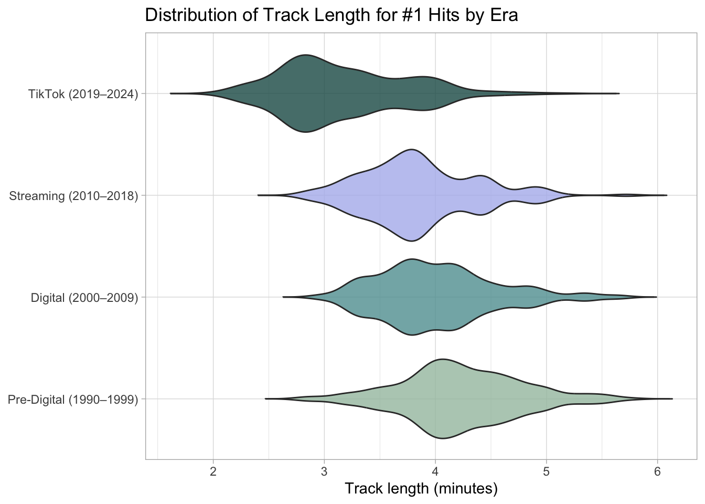
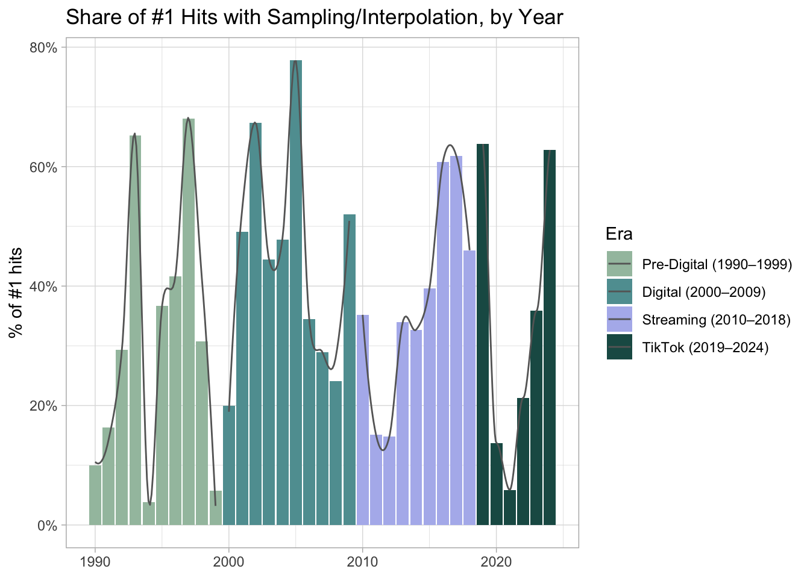
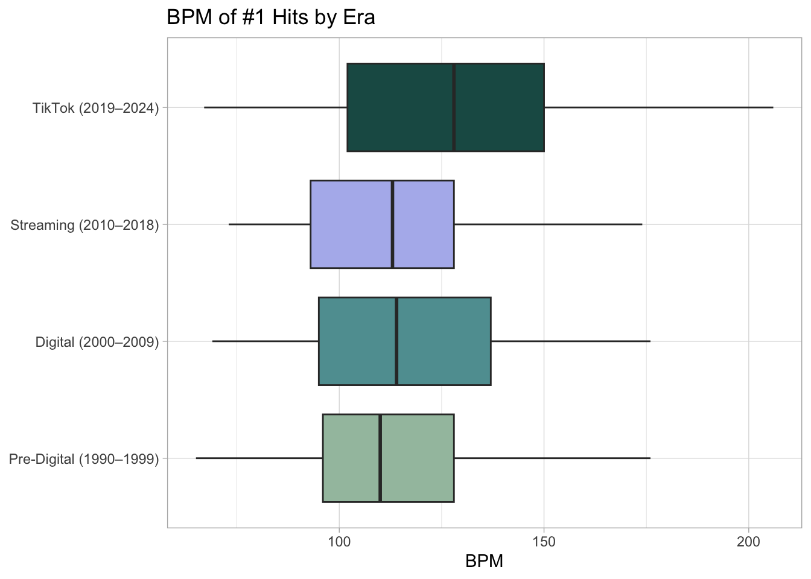

# load packageslibrary(dplyr)library(ggplot2)library(scales)library(tidyr)library(knitr)library(matrixStats)library(stringr)# load dataset directly from the tidytuesday github repobillboard <- readr::read_csv('https://raw.githubusercontent.com/rfordatascience/tidytuesday/main/data/2025/2025-08-26/billboard.csv')
1 Purpose
This project explores how Billboard #1 Hits have evolved across four eras of music consumption: a Pre-Digital Era (1990–1999), a Digital Download Era (2000–2009), a Streaming Era (2010–2018), and a Short-Form Video/TikTok Era (2019–2024). I focus on how tempo (BPM), track length, and the use of samples or interpolations change over time, and whether the short-form video era stands out.
This topic matters because it’s important to understand what shapes the music we listen to. I’ve noticed some clear shifts in which songs are popularized and how artists write them: higher BPMs, more reuse of existing material, and shorter runtimes. I wanted to investigate how the potential of going viral on short-form video platforms like TikTok influences the mainstream music of today. I hope readers will come away with a sense of how trends and incentives centered around virality influence the music industry and show up in the structure and sound of #1 hits.
The dataset contains detailed information about every song that topped the Billboard Hot 100 between August 4, 1958, and January 11, 2025. Chris Dalla Riva compiled this data as he wrote the book Uncharted Territory: What Numbers Tell Us about the Biggest Hit Songs and Ourselves. I chose this dataset because importing a pre-existing dataset via a TidyTuesday CSV on GitHub is worlds easier than cleaning and importing a raw dataset.
2.1 Data Dictionary
The original dataset contains 105 columns, 8 of which I utilized.
Relevant columns:
song: song name
artist: artist name
date: first week to hit number one
weeks_at_number_one: collective weeks at number one
bpm: beats per minute
length_sec: song length in seconds
sample: dummy for if the song samples the recording of another song (1 = yes, 0 = no)
interpolation: dummy for if the song uses a musical/lyrical element from another song, re-records it themselves and is not a complete cover (1 = yes, 0 = no)
2.1.1 Raw Dataset Table
Show code
# randomly sample 100 rows from the datasetbillboard |>sample_n(100)
2.2 Data Processing
To make patterns easier to interpret, I grouped hits into four eras based on their first week at #1: Pre-Digital (1990–1999), Digital (2000–2009), Streaming (2010–2018), and TikTok (2019–2024).
From the original dataset I kept song, artist, bpm, length_sec, and renamed the unnecessarily long weeks_at_number_one to w. I also created a rehash value that equals 1 if a song uses either a sample or an interpolation (or both). Because the TikTok era covers a relatively short time span, I limited the analysis to songs from 1990–2024, leaving sufficient time to fit in three pre-TikTok eras for comparison; this window spans hits from January 20, 1990, to December 12, 2024. Lastly, I assigned each song to an era and stored the ordering so that eras would appear in chronological order whenever they are used in tables or plots
# create list of eras and corresponding colors# these will be reused for tables and plots to keep era ordering consistentera_list <-c( "Pre-Digital (1990–1999)","Digital (2000–2009)","Streaming (2010–2018)","TikTok (2019–2024)" )era_cols <-c("Pre-Digital (1990–1999)"="#a3c1ad","Digital (2000–2009)"="#5f9ea0","Streaming (2010–2018)"="#B2B9ED","TikTok (2019–2024)"="#1C5954" )# extract relevant data, reformat as neededbillboard_ <- billboard |>transmute( song, artist, bpm, length_sec,w = weeks_at_number_one,# extract yearyear =as.integer(format(date, "%Y")),# rehash == 1 if the song uses a sample or an interpolation or bothrehash =as.integer(sample | interpolation) ) |>filter(between(year, 1990, 2024)) |>mutate(era =case_when(# assign each year to one of the four eras year <2000~ era_list[1], year <2010~ era_list[2], year <2019~ era_list[3],TRUE~ era_list[4] ),# store eras as an ordered factor, tables/plots use this orderera =factor(era, levels = era_list) )
3 Analysis
3.1 Era Table
Show code
# calculate weighted means for each era, round to whole numbersera_table <- billboard_ |>group_by(era) |>summarise(n_hits =n(),mean_bpm =round(weighted.mean(bpm, w, na.rm =TRUE)),mean_length =weighted.mean(length_sec, w, na.rm =TRUE),reuse_pct =paste0(round(weighted.mean(rehash, w, na.rm =TRUE)*100), "%"),# turn proportion of songs that only hit #1 for one week into a percentpct_one_week =paste0(round(mean(w ==1) *100), "%"),.groups ="drop" ) |>mutate(mean_length=paste0(# calculate minutes, round downfloor(mean_length /60), ":", #calculate seconds, no decimal places, # if there is only 1 digit decimal add a 0 beforestr_pad(round(mean_length%%60), 2, pad ="0")))kable(era_table, align="lrrrrrr")
era
n_hits
mean_bpm
mean_length
reuse_pct
pct_one_week
Pre-Digital (1990–1999)
140
112
4:14
30%
28%
Digital (2000–2009)
129
118
4:01
44%
24%
Streaming (2010–2018)
101
113
3:51
38%
25%
TikTok (2019–2024)
96
130
3:11
34%
56%
I decided on this era-based table because it’s the easiest way to quantify and compare the four eras on their key metrics: mean BPM, average track length, reuse of musical material, and how often #1 hits are “one-week wonders.” I also listed the number of hits in each era for context, as the means shown are weighted. Putting these numbers side by side makes the shifts across eras very evident. For example, the TikTok era has the highest mean BPM, the shortest average runtime, and roughly double the share of songs that only hit #1 for a single week compared to any of the three earlier eras. Together, these patterns support a narrative of shorter and faster #1 hits with weaker staying power.
The increase in one-week wonders is particularly interesting to me. It makes me wonder what forces are driving that change, whether it’s people and media moving quickly from one viral hit to the next, changes in how labels promote songs, or something else entirely. The reuse percentage is harder to interpret directly from this table: TikTok-era rate of reuse is the second lowest of the four eras, and seems to be on a downswing in the last few eras if anything. That’s why I follow up this table with a bar graph that provides a time-based view, so we can see how sampling and interpolation actually behave year by year instead of representing each era with a single number.
3.2 Track Length
Show code
billboard_ |># drop extreme outlier (10 minutes)filter(length_sec <600) |># uncount so songs appear once per week they spent at #1 uncount(weights = w) |>ggplot(aes(x = era, y = length_sec /60, fill = era)) +geom_violin(trim =FALSE, alpha =0.8, show.legend =FALSE) +scale_fill_manual(values = era_cols, drop =FALSE) +coord_flip() +labs(title ="Distribution of Track Length for #1 Hits by Era",x =NULL,y ="Track length (minutes)" ) +theme_light()

Figure 3.2 Violin plot of track length by era
I initially tried to show track length with a yearly scatterplot and a bar graph, but both felt too busy and didn’t really highlight how the distribution of song lengths varies from era to era. I chose a violin plot instead because it shows where track lengths are most concentrated and makes it easy to compare the overall shapes. I also excluded one extreme outlier (Taylor Swift’s All Too Well (10 Minute Version)) from this visualization, so that the violins would focus on the more standard 2–6 minute length hits rather than being stretched by a single unusually long track.
The resulting plot shows that the TikTok era has a noticeably different shape compared to the earlier eras. The Pre-Digital, Digital, and Streaming eras all have distributions closer to a symmetric, bell-shaped curve, centered around the four-minute mark. In contrast, the TikTok-era violin is heavily weighted toward shorter tracks, with a large portion of its mass under three minutes. This supports the idea that shorter songs are more likely to reach and/or maintain the #1 position in the TikTok era. I expected some shift toward shorter runtimes, but I was surprised by just how skewed the distribution is; I thought it would be a more symmetrical shape centered on a slightly lower median runtime.
3.3 Sampling & Interpolation
Show code
billboard_ |>group_by(year, era) |>summarise(# week-weighted share of songs that rehash materialshare_rehash =weighted.mean(rehash, w, na.rm =TRUE),.groups ="drop") |>ggplot(aes(year, share_rehash, fill = era)) +geom_col() +geom_smooth(method ="loess", se =FALSE, span = .5, linewidth = .5, color ="grey40") +scale_fill_manual(values = era_cols, drop =FALSE) +scale_y_continuous(labels = percent) +labs(title ="Share of #1 Hits with Sampling/Interpolation, by Year",x =NULL, y ="% of #1 hits", fill ="Era") +theme_light()

Figure 3.3 Bar graph of sampling/interpolation by year
I tried using a bar graph for each of the three variables I’m exploring, and sampling/interpolation felt like the one that benefited most from a visualization of this format. The yearly share of #1 hits that reuse material is in constant flux, and any single number per era style graph/table would lose a lot of crucial detail that only appears in the year-to-year changes. The combination of yearly bars and a smoothed local polynomial regression line using the loess method makes it easier to visualize both the short-term ups and downs and the broader behaviors across eras.
One pattern that jumped out at me was what happens around the start of the TikTok era. In 2019, the first year in that era, more than 60% of #1 hits used some kind of rehashed material. Then, from 2020-2022, the share drops sharply and hovers in the 5-20% range before rising again in 2023-2024. It’s worth considering a connection between that dip and COVID, maybe clearing samples became more difficult during that time, or artists shifted toward more acoustic, DIY-style songs, but it’s hard to say anything concrete without further context. The drop in 2020-2021 was a total surprise to me; I had expected that with everyone at home, the lack of in-person collaboration might push more artists to explore sampling and interpolation instead. What I can say from this plot is that sampling and interpolation don’t follow any sort of linear path. They move in waves, and the TikTok era thus far has included both a severe drop and a sharp rebound.
In many viral songs, sampling and interpolation function almost like pre-packaged hooks: using a familiar chorus or melody is a surefire way to grab attention, because people already know and love the original song. That’s part of why I expected to see a stronger and more consistent rise in reuse during the TikTok era. The absence of this pattern could suggest that much of the sampling so prevalent on TikTok may be in viral songs and remixes containing samples that never get cleared, preventing these tracks from even touching the Billboard Hot 100.
3.4 BPM
Show code
billboard_ |># uncount so a songs BPM is factored in for every week it spent at #1uncount(weights = w) |>ggplot(aes(x = era, y = bpm, fill = era)) +geom_boxplot(show.legend =FALSE) +scale_fill_manual(values = era_cols, drop =FALSE) +coord_flip() +labs(title ="BPM of #1 Hits by Era",x =NULL, y ="BPM") +theme_light()

Figure 3.4 Boxplot of BPMs by era
I used a boxplot to visualize BPM because it does a good job of summarizing the typical tempo for each era while still representing the spread and extreme values. Each box contains the middle 50% of BPMs, with the center line indicating the median, and the whiskers marking the fastest and slowest #1 hits from that era. In other plot styles, BPM didn’t show very interesting year-to-year variation beyond a general upward trend, so a compact, zoomed-out comparison of each era felt better suited.
The main takeaway here is that TikTok era hits are clearly faster. The median BPM in the TikTok era is noticeably higher than any of the earlier periods, and the entire box is shifted to the right, not just outliers. The TikTok era also includes the only #1 hits with tempos that surpass 200 BPM. This matches my expectations that more energetic, attention-grabbing, quick-paced songs would be increasingly preferred in an environment where tracks need to stand out fast and work well in short-form content. Combined with the track length plot, this suggests that TikTok-era #1s aren’t just shorter, but that they also pack more beats per minute into that shorter runtime, which aligns with the idea of songs being optimized for hooks and replayability.
4 Reflection
One of the biggest limitations of this project is that I only a handful of years of TikTok-era data, and only for songs that reached #1. With such a short window, it’s probably too early to make any strong claims about TikTok’s long-term impact on popular music. Furthermore, a lot of the most viral TikTok songs are remixes, sped-up edits, or unreleased clips with unauthorized sampling that never appear on the Billboard charts at all. As a result, the dataaset I used is only able to capture a narrow glimpse of how TikTok is shaping modern music.
If I were to redo or extend this project, I would consider using a more comprehensive dataset. For example, it would be interesting to compare all Hot 100 entries for the same number of years before and after TikTok’s rise, which would give a fuller picture of how the entire chart is affected, not just the #1 spot. With more time, I’d also like to look at cross-comparisons: checking for seasonal patterns, exploring which genres show the most extreme changes in BPM and length, or comparing songs popularized by TikTok to those that climbed the charts through more traditional methods. I’d also be curious to look at ratios like BPM to runtime to see whether shorter songs tend toward higher BPMs, effectively fitting a similar number of beats into a smaller package.
Overall, I enjoyed experimenting with the different visualizations, seeing how much the choice of plot affects the way we interpret the results was really interesting Even with the limitations, the combination of shorter runtimes, higher tempos, and more one-week-wonder #1 hits in the TikTok era suggests that the “TikTokification” of music has a real impact on the traits of modern hits, and is something we should all keep an eye on in the coming years.